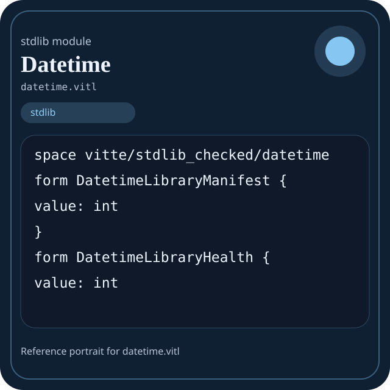

Stdlib module datetime.vitl
This page is a wiki-style reference for one concrete stdlib file. It explains what the file owns, where it fits in the family, and how to decide whether this is the right surface to depend on.

datetime.vitl.Family: stdlib
Kind: public stdlib surface
Page style: this reference follows the same “encyclopedic card + portrait + usage contract” logic as the keyword pages, but for stdlib modules.
Summary
- Overview
- Purpose
- Taxonomy
- Implementation profile
- Top-level API inventory
- Position in family
- Declaration map
- Representative signatures
- How to use this module
- User example
- Keyword coverage
- Source shape
- Source landmarks
- Source organization
- Complete API catalog
- Integration boundaries
- Composition guidance
- Relationship table
- Neighbor modules
Overview
| Field | Value |
|---|---|
| Path | datetime.vitl |
| Family | stdlib |
| Kind | public stdlib surface |
| Line count | 645 |
| Declared procedures | 138 |
| Declared forms/picks | 16 |
`datetime.vitl` is a public stdlib surface inside the `stdlib` family. It should be read as one focused slice of the broader family responsibility: Top-level map of the Vitte standard library and the responsibilities owned by each family.
Purpose
This file should be chosen because of responsibility, not because its name “sounds close enough”. Inside the stdlib family, it carries one focused part of the contract and keeps that responsibility separate from neighboring concerns.
- Domain values start in `core` and `strings`.
- Grouped data moves through `collections` or `data`.
- Structured export goes through `json` and `encoding`.
- Filesystem or process interaction goes through `path`, `io`, `os`, or `sysinfo`.
- Explicit runtime coordination goes through `async`, `threading`, `kernel`, or `ffi`.
Taxonomy
Think of this page as a generated encyclopedia entry rather than a hand-written tutorial. The goal is to show what kind of module this is, how dense it is, and what reading strategy makes sense before depending on it.
- Large algorithm surface: this file exposes many procedures and likely acts as a domain toolkit rather than a single thin wrapper.
- Owns domain vocabulary: the module declares data shapes in addition to executable helpers, so its types are part of the contract.
- Has tuning constants: part of the module behavior is controlled by named constants that document default precision, limits, or policy.
- Minimal top-level dependencies: the module reads as mostly self-contained from its opening declarations.
Implementation profile
This profile is inferred directly from the source text. It does not replace reading the file, but it tells you quickly whether the module is mostly declarative, loop-heavy, branch-heavy, or organized around many small exits.
| Signal | Count | What it suggests |
|---|---|---|
if | 0 | Branching density and local decision-making. |
while | 0 | Loop-heavy or iterative implementation style. |
for | 0 | Collection-style traversal at source level. |
match | 0 | Variant-driven branching or grammar-style decoding. |
let | 0 | Local state and intermediate value density. |
give | 138 | Number of explicit exit points and result shaping. |
Top-level API inventory
| Surface | Items |
|---|---|
| Procedures | datetime_library_version, datetime_library_name, datetime_library_module_count, datetime_library_modules, datetime_library_manifest, datetime_library_ready, datetime_library_health, datetime_library_summary, datetime_library_selftest, datetime_library_report, duration_new, duration_zero |
| Forms | DatetimeLibraryManifest, DatetimeLibraryHealth, DatetimeLibrarySummary, DatetimeLibraryReport, Duration, Date, Time, DateTime, UnixTimestamp |
| Picks | Weekday, Month, MaybeMonth, DateTimeError, MaybeDate, MaybeTime, MaybeDateTime |
| Constants | NANOS_PER_MICRO, NANOS_PER_MILLI, NANOS_PER_SECOND, SECONDS_PER_MINUTE, MINUTES_PER_HOUR, HOURS_PER_DAY, SECONDS_PER_HOUR, SECONDS_PER_DAY, MILLIS_PER_SECOND, MICROS_PER_SECOND, UNIX_EPOCH_YEAR |
| Exports | none declared at top level |
Imported surfaces
This file does not advertise a top-level `use` surface in its opening declarations. That often means it is either self-contained or an aggregation layer.
Position in family
This file is module 3 of 11 in the stdlib family when ordered by path. By procedure count it ranks 2, and by line count it ranks 4. Those ranks are useful as rough signals of breadth, not as quality judgments.
Declaration map
The declaration map turns raw source into a scan-friendly catalog. It is useful when the file is large enough that a reader wants to orient by kinds of surfaces first.
| Line | Name | Kind | Role |
|---|---|---|---|
| 1 | vitte/stdlib_checked/datetime | space | Declares the namespace that anchors this file in the stdlib tree. |
| 9 | DatetimeLibraryManifest | form | Introduces a structured data shape that other procedures can exchange. |
| 13 | DatetimeLibraryHealth | form | Introduces a structured data shape that other procedures can exchange. |
| 17 | DatetimeLibrarySummary | form | Introduces a structured data shape that other procedures can exchange. |
| 21 | DatetimeLibraryReport | form | Introduces a structured data shape that other procedures can exchange. |
| 25 | NANOS_PER_MICRO | const | Defines a named constant reused across the module. |
| 27 | NANOS_PER_MILLI | const | Defines a named constant reused across the module. |
| 29 | NANOS_PER_SECOND | const | Defines a named constant reused across the module. |
| 31 | SECONDS_PER_MINUTE | const | Defines a named constant reused across the module. |
| 33 | MINUTES_PER_HOUR | const | Defines a named constant reused across the module. |
| 35 | HOURS_PER_DAY | const | Defines a named constant reused across the module. |
| 37 | SECONDS_PER_HOUR | const | Defines a named constant reused across the module. |
| 39 | SECONDS_PER_DAY | const | Defines a named constant reused across the module. |
| 41 | MILLIS_PER_SECOND | const | Defines a named constant reused across the module. |
| 43 | MICROS_PER_SECOND | const | Defines a named constant reused across the module. |
| 45 | UNIX_EPOCH_YEAR | const | Defines a named constant reused across the module. |
| 47 | datetime_library_version | proc | Represents one top-level surface in the file contract and should be read as part of the module boundary. |
| 51 | datetime_library_name | proc | Represents one top-level surface in the file contract and should be read as part of the module boundary. |
| 55 | datetime_library_module_count | proc | Represents one top-level surface in the file contract and should be read as part of the module boundary. |
| 59 | datetime_library_modules | proc | Represents one top-level surface in the file contract and should be read as part of the module boundary. |
| 63 | datetime_library_manifest | proc | Represents one top-level surface in the file contract and should be read as part of the module boundary. |
| 67 | datetime_library_ready | proc | Represents one top-level surface in the file contract and should be read as part of the module boundary. |
| 71 | datetime_library_health | proc | Represents one top-level surface in the file contract and should be read as part of the module boundary. |
| 75 | datetime_library_summary | proc | Represents one top-level surface in the file contract and should be read as part of the module boundary. |
| 79 | datetime_library_selftest | proc | Represents one top-level surface in the file contract and should be read as part of the module boundary. |
| 83 | datetime_library_report | proc | Represents one top-level surface in the file contract and should be read as part of the module boundary. |
| 87 | Duration | form | Introduces a structured data shape that other procedures can exchange. |
| 91 | Date | form | Introduces a structured data shape that other procedures can exchange. |
| 95 | Time | form | Introduces a structured data shape that other procedures can exchange. |
| 99 | DateTime | form | Introduces a structured data shape that other procedures can exchange. |
| 103 | UnixTimestamp | form | Introduces a structured data shape that other procedures can exchange. |
| 107 | Weekday | pick | Introduces a tagged variant type used to model distinct outcomes. |
| 111 | Month | pick | Introduces a tagged variant type used to model distinct outcomes. |
| 115 | MaybeMonth | pick | Introduces a tagged variant type used to model distinct outcomes. |
| 119 | DateTimeError | pick | Introduces a tagged variant type used to model distinct outcomes. |
| 123 | MaybeDate | pick | Introduces a tagged variant type used to model distinct outcomes. |
| 127 | MaybeTime | pick | Introduces a tagged variant type used to model distinct outcomes. |
| 131 | MaybeDateTime | pick | Introduces a tagged variant type used to model distinct outcomes. |
| 135 | duration_new | proc | Represents one top-level surface in the file contract and should be read as part of the module boundary. |
| 139 | duration_zero | proc | Represents one top-level surface in the file contract and should be read as part of the module boundary. |
| 143 | duration_from_seconds | proc | Represents one top-level surface in the file contract and should be read as part of the module boundary. |
| 147 | duration_from_millis | proc | Represents one top-level surface in the file contract and should be read as part of the module boundary. |
| 151 | duration_from_micros | proc | Represents one top-level surface in the file contract and should be read as part of the module boundary. |
| 155 | duration_from_nanos | proc | Represents one top-level surface in the file contract and should be read as part of the module boundary. |
| 159 | duration_total_seconds | proc | Represents one top-level surface in the file contract and should be read as part of the module boundary. |
| 163 | duration_total_millis | proc | Represents one top-level surface in the file contract and should be read as part of the module boundary. |
| 167 | duration_total_micros | proc | Represents one top-level surface in the file contract and should be read as part of the module boundary. |
| 171 | duration_total_nanos | proc | Represents one top-level surface in the file contract and should be read as part of the module boundary. |
| 175 | duration_add | proc | Represents one top-level surface in the file contract and should be read as part of the module boundary. |
| 179 | duration_sub | proc | Represents one top-level surface in the file contract and should be read as part of the module boundary. |
| 183 | duration_neg | proc | Represents one top-level surface in the file contract and should be read as part of the module boundary. |
| 187 | duration_cmp | proc | Represents one top-level surface in the file contract and should be read as part of the module boundary. |
| 191 | duration_eq | proc | Represents one top-level surface in the file contract and should be read as part of the module boundary. |
| 195 | duration_lt | proc | Represents one top-level surface in the file contract and should be read as part of the module boundary. |
| 199 | duration_lte | proc | Represents one top-level surface in the file contract and should be read as part of the module boundary. |
| 203 | duration_gt | proc | Represents one top-level surface in the file contract and should be read as part of the module boundary. |
| 207 | duration_gte | proc | Represents one top-level surface in the file contract and should be read as part of the module boundary. |
| 211 | is_leap_year | proc | Represents one top-level surface in the file contract and should be read as part of the module boundary. |
| 215 | days_in_month | proc | Represents one top-level surface in the file contract and should be read as part of the module boundary. |
| 219 | days_in_year | proc | Represents one top-level surface in the file contract and should be read as part of the module boundary. |
| 223 | month_to_number | proc | Represents one top-level surface in the file contract and should be read as part of the module boundary. |
| 227 | number_to_month | proc | Represents one top-level surface in the file contract and should be read as part of the module boundary. |
| 231 | month_name | proc | Represents one top-level surface in the file contract and should be read as part of the module boundary. |
| 235 | month_short_name | proc | Represents one top-level surface in the file contract and should be read as part of the module boundary. |
| 239 | weekday_name | proc | Represents one top-level surface in the file contract and should be read as part of the module boundary. |
| 243 | weekday_short_name | proc | Represents one top-level surface in the file contract and should be read as part of the module boundary. |
| 247 | validate_date | proc | Represents one top-level surface in the file contract and should be read as part of the module boundary. |
| 251 | validate_time | proc | Represents one top-level surface in the file contract and should be read as part of the module boundary. |
| 255 | validate_datetime | proc | Represents one top-level surface in the file contract and should be read as part of the module boundary. |
| 259 | date_new | proc | Represents one top-level surface in the file contract and should be read as part of the module boundary. |
| 263 | time_new | proc | Represents one top-level surface in the file contract and should be read as part of the module boundary. |
| 267 | datetime_new | proc | Represents one top-level surface in the file contract and should be read as part of the module boundary. |
| 271 | date_ordinal | proc | Represents one top-level surface in the file contract and should be read as part of the module boundary. |
| 275 | date_from_ordinal | proc | Represents one top-level surface in the file contract and should be read as part of the module boundary. |
| 279 | days_before_year | proc | Represents one top-level surface in the file contract and should be read as part of the module boundary. |
| 283 | days_before_month | proc | Represents one top-level surface in the file contract and should be read as part of the module boundary. |
| 287 | date_to_days_since_epoch | proc | Represents one top-level surface in the file contract and should be read as part of the module boundary. |
| 291 | days_since_epoch_to_date | proc | Represents one top-level surface in the file contract and should be read as part of the module boundary. |
| 295 | time_to_seconds | proc | Represents one top-level surface in the file contract and should be read as part of the module boundary. |
| 299 | seconds_to_time | proc | Represents one top-level surface in the file contract and should be read as part of the module boundary. |
| 303 | datetime_to_unix | proc | Represents one top-level surface in the file contract and should be read as part of the module boundary. |
| 307 | unix_to_datetime | proc | Represents one top-level surface in the file contract and should be read as part of the module boundary. |
| 311 | unix_normalize | proc | Represents one top-level surface in the file contract and should be read as part of the module boundary. |
| 315 | unix_from_seconds | proc | Represents one top-level surface in the file contract and should be read as part of the module boundary. |
| 319 | unix_from_millis | proc | Represents one top-level surface in the file contract and should be read as part of the module boundary. |
| 323 | unix_to_millis | proc | Represents one top-level surface in the file contract and should be read as part of the module boundary. |
| 327 | floor_div | proc | Represents one top-level surface in the file contract and should be read as part of the module boundary. |
| 331 | floor_mod | proc | Represents one top-level surface in the file contract and should be read as part of the module boundary. |
| 335 | weekday_from_days | proc | Represents one top-level surface in the file contract and should be read as part of the module boundary. |
| 339 | date_weekday | proc | Represents one top-level surface in the file contract and should be read as part of the module boundary. |
| 343 | date_add_days | proc | Represents one top-level surface in the file contract and should be read as part of the module boundary. |
| 347 | datetime_add_duration | proc | Represents one top-level surface in the file contract and should be read as part of the module boundary. |
| 351 | datetime_sub_duration | proc | Represents one top-level surface in the file contract and should be read as part of the module boundary. |
| 355 | datetime_duration_between | proc | Represents one top-level surface in the file contract and should be read as part of the module boundary. |
| 359 | date_cmp | proc | Represents one top-level surface in the file contract and should be read as part of the module boundary. |
| 363 | time_cmp | proc | Represents one top-level surface in the file contract and should be read as part of the module boundary. |
| 367 | datetime_cmp | proc | Represents one top-level surface in the file contract and should be read as part of the module boundary. |
| 371 | date_eq | proc | Represents one top-level surface in the file contract and should be read as part of the module boundary. |
| 375 | time_eq | proc | Represents one top-level surface in the file contract and should be read as part of the module boundary. |
| 379 | datetime_eq | proc | Represents one top-level surface in the file contract and should be read as part of the module boundary. |
| 383 | date_is_before | proc | Represents one top-level surface in the file contract and should be read as part of the module boundary. |
| 387 | date_is_after | proc | Represents one top-level surface in the file contract and should be read as part of the module boundary. |
| 391 | datetime_is_before | proc | Represents one top-level surface in the file contract and should be read as part of the module boundary. |
| 395 | datetime_is_after | proc | Represents one top-level surface in the file contract and should be read as part of the module boundary. |
| 399 | clamp_u8 | proc | Represents one top-level surface in the file contract and should be read as part of the module boundary. |
| 403 | ascii_digit_value | proc | Represents one top-level surface in the file contract and should be read as part of the module boundary. |
| 407 | is_ascii_digit | proc | Represents one top-level surface in the file contract and should be read as part of the module boundary. |
| 411 | parse_2_digits | proc | Transforms an input representation into a structured internal value. |
| 415 | parse_4_digits | proc | Transforms an input representation into a structured internal value. |
| 419 | parse_date_yyyy_mm_dd | proc | Transforms an input representation into a structured internal value. |
| 423 | parse_time_hh_mm_ss | proc | Transforms an input representation into a structured internal value. |
| 427 | parse_datetime_iso_basic | proc | Transforms an input representation into a structured internal value. |
| 431 | two_digits | proc | Represents one top-level surface in the file contract and should be read as part of the module boundary. |
| 435 | four_digits | proc | Represents one top-level surface in the file contract and should be read as part of the module boundary. |
| 439 | format_date_iso | proc | Represents one top-level surface in the file contract and should be read as part of the module boundary. |
| 443 | format_time_iso | proc | Represents one top-level surface in the file contract and should be read as part of the module boundary. |
| 447 | format_datetime_iso | proc | Represents one top-level surface in the file contract and should be read as part of the module boundary. |
| 451 | format_datetime_space | proc | Represents one top-level surface in the file contract and should be read as part of the module boundary. |
| 455 | format_date_human | proc | Represents one top-level surface in the file contract and should be read as part of the module boundary. |
| 459 | format_weekday_date | proc | Represents one top-level surface in the file contract and should be read as part of the module boundary. |
| 463 | start_of_day | proc | Represents one top-level surface in the file contract and should be read as part of the module boundary. |
| 467 | end_of_day | proc | Represents one top-level surface in the file contract and should be read as part of the module boundary. |
| 471 | date_next_day | proc | Represents one top-level surface in the file contract and should be read as part of the module boundary. |
| 475 | date_prev_day | proc | Represents one top-level surface in the file contract and should be read as part of the module boundary. |
| 479 | date_add_weeks | proc | Represents one top-level surface in the file contract and should be read as part of the module boundary. |
| 483 | date_start_of_month | proc | Represents one top-level surface in the file contract and should be read as part of the module boundary. |
| 487 | date_end_of_month | proc | Represents one top-level surface in the file contract and should be read as part of the module boundary. |
| 491 | date_start_of_year | proc | Represents one top-level surface in the file contract and should be read as part of the module boundary. |
| 495 | date_end_of_year | proc | Represents one top-level surface in the file contract and should be read as part of the module boundary. |
| 499 | date_add_months | proc | Represents one top-level surface in the file contract and should be read as part of the module boundary. |
| 503 | date_add_years | proc | Represents one top-level surface in the file contract and should be read as part of the module boundary. |
| 507 | floor_div_i32 | proc | Represents one top-level surface in the file contract and should be read as part of the module boundary. |
| 511 | floor_mod_i32 | proc | Represents one top-level surface in the file contract and should be read as part of the module boundary. |
| 515 | iso_weekday_number | proc | Represents one top-level surface in the file contract and should be read as part of the module boundary. |
| 519 | date_iso_weekday_number | proc | Represents one top-level surface in the file contract and should be read as part of the module boundary. |
| 523 | is_weekend | proc | Represents one top-level surface in the file contract and should be read as part of the module boundary. |
| 527 | is_weekday | proc | Represents one top-level surface in the file contract and should be read as part of the module boundary. |
| 531 | date_days_between | proc | Represents one top-level surface in the file contract and should be read as part of the module boundary. |
| 535 | datetime_seconds_between | proc | Represents one top-level surface in the file contract and should be read as part of the module boundary. |
| 539 | unix_epoch_datetime | proc | Represents one top-level surface in the file contract and should be read as part of the module boundary. |
| 543 | unix_epoch_date | proc | Represents one top-level surface in the file contract and should be read as part of the module boundary. |
| 547 | midnight | proc | Represents one top-level surface in the file contract and should be read as part of the module boundary. |
| 551 | noon | proc | Represents one top-level surface in the file contract and should be read as part of the module boundary. |
| 555 | time_add_duration | proc | Represents one top-level surface in the file contract and should be read as part of the module boundary. |
| 559 | time_is_midnight | proc | Represents one top-level surface in the file contract and should be read as part of the module boundary. |
| 563 | time_is_noon | proc | Represents one top-level surface in the file contract and should be read as part of the module boundary. |
| 567 | date_quarter | proc | Represents one top-level surface in the file contract and should be read as part of the module boundary. |
| 571 | date_day_of_year | proc | Represents one top-level surface in the file contract and should be read as part of the module boundary. |
| 575 | date_days_remaining_in_year | proc | Represents one top-level surface in the file contract and should be read as part of the module boundary. |
| 579 | date_days_remaining_in_month | proc | Represents one top-level surface in the file contract and should be read as part of the module boundary. |
| 583 | date_is_first_day_of_month | proc | Represents one top-level surface in the file contract and should be read as part of the module boundary. |
| 587 | date_is_last_day_of_month | proc | Represents one top-level surface in the file contract and should be read as part of the module boundary. |
| 591 | date_is_first_day_of_year | proc | Represents one top-level surface in the file contract and should be read as part of the module boundary. |
| 595 | date_is_last_day_of_year | proc | Represents one top-level surface in the file contract and should be read as part of the module boundary. |
| 599 | timestamp_cmp | proc | Represents one top-level surface in the file contract and should be read as part of the module boundary. |
| 603 | timestamp_add_duration | proc | Represents one top-level surface in the file contract and should be read as part of the module boundary. |
| 607 | timestamp_sub_duration | proc | Represents one top-level surface in the file contract and should be read as part of the module boundary. |
| 611 | timestamp_duration_between | proc | Represents one top-level surface in the file contract and should be read as part of the module boundary. |
| 615 | datetime_now_unavailable | proc | Represents one top-level surface in the file contract and should be read as part of the module boundary. |
| 619 | string_len | proc | Represents one top-level surface in the file contract and should be read as part of the module boundary. |
| 623 | string_at | proc | Represents one top-level surface in the file contract and should be read as part of the module boundary. |
| 627 | string_slice | proc | Represents one top-level surface in the file contract and should be read as part of the module boundary. |
| 631 | string_concat | proc | Represents one top-level surface in the file contract and should be read as part of the module boundary. |
| 635 | string_concat_many | proc | Represents one top-level surface in the file contract and should be read as part of the module boundary. |
| 639 | int_to_string | proc | Represents one top-level surface in the file contract and should be read as part of the module boundary. |
| 643 | datetime_selftest | proc | Represents one top-level surface in the file contract and should be read as part of the module boundary. |
The table is exhaustive for top-level declarations of the selected kinds. This file declares 166 matching surfaces.
Representative signatures
These signatures are shown in source order so the page keeps the feel of a reference manual, not just a keyword cloud.
form DatetimeLibraryManifest {(line 9)form DatetimeLibraryHealth {(line 13)form DatetimeLibrarySummary {(line 17)form DatetimeLibraryReport {(line 21)const NANOS_PER_MICRO: i64 = 0(line 25)const NANOS_PER_MILLI: i64 = 0(line 27)const NANOS_PER_SECOND: i64 = 0(line 29)const SECONDS_PER_MINUTE: i64 = 0(line 31)const MINUTES_PER_HOUR: i64 = 0(line 33)const HOURS_PER_DAY: i64 = 0(line 35)const SECONDS_PER_HOUR: i64 = 0(line 37)const SECONDS_PER_DAY: i64 = 0(line 39)const MILLIS_PER_SECOND: i64 = 0(line 41)const MICROS_PER_SECOND: i64 = 0(line 43)const UNIX_EPOCH_YEAR: i32 = 0(line 45)proc datetime_library_version() -> int {(line 47)proc datetime_library_name() -> int {(line 51)proc datetime_library_module_count() -> int {(line 55)
The list is intentionally capped here; the source file declares 165 matching signatures in total.
How to use this module
Start by reading the file as an ownership boundary. Ask three questions: what enters this module, what stable types or procedures it exports, and what adjacent module should stay outside of it.
- Read
spaceand top-level imports first so the ownership boundary ofdatetime.vitlis explicit. - Scan constants before procedures; they often encode precision, limits, or policy assumptions that explain later behavior.
- Read declared forms and picks before algorithms so the data vocabulary is stable in your head.
- Traverse procedures in source order; the early helpers usually explain the naming and numeric conventions used later.
- Only after that compare neighbor modules, because the right boundary choice matters more than memorizing one helper name.
User example
This example is generated from the actual stdlib module surface. Its job is not to be the smallest snippet possible; its job is to show a realistic consumer-shaped file that exercises the module and mirrors the language keywords the module itself relies on.
space demo/datetime
form DemoState {
ready: bool,
note: string
}
proc run_example() -> DemoState {
let ready: bool = datetime_library_version()
give DemoState { ready: ready, note: "ok" }
}Keyword coverage
This table makes the “all keywords of the module” requirement auditable. It compares the detected Vitte keywords in the source file with the generated consumer example above.
| Keyword | Present in module source | Used in generated user example |
|---|---|---|
space | yes | yes |
const | yes | no |
form | yes | yes |
pick | yes | no |
proc | yes | yes |
give | yes | yes |
Keywords still not exercised directly in the generated snippet: const, pick. The page still lists them here so the gap is visible.
Source shape
space vitte/stdlib_checked/datetime
form DatetimeLibraryManifest {
value: int
}
form DatetimeLibraryHealth {
value: int
}
form DatetimeLibrarySummary {
value: int
}The excerpt is not meant to replace the file. It exists to make the module recognizable at first glance, the same way a Wikipedia infobox helps the reader orient before reading the whole article.
Source landmarks
Large files are easier to retain when they have visible landmarks. When the source contains explicit section banners, they are surfaced here; otherwise the first major declarations are used as anchors.
- Line 1:
space vitte/stdlib_checked/datetime - Line 9:
form DatetimeLibraryManifest { - Line 13:
form DatetimeLibraryHealth { - Line 17:
form DatetimeLibrarySummary { - Line 21:
form DatetimeLibraryReport { - Line 25:
const NANOS_PER_MICRO: i64 = 0 - Line 27:
const NANOS_PER_MILLI: i64 = 0 - Line 29:
const NANOS_PER_SECOND: i64 = 0
Source organization
When a file carries its own internal chaptering, those chapters usually reveal the intended reading order better than a flat symbol list. This section reconstructs that organization from the source itself.
File surfaces
Top-level items: 166. Procedures: 138. Data surfaces: 16. Constants: 11.
First visible names: vitte/stdlib_checked/datetime, DatetimeLibraryManifest, DatetimeLibraryHealth, DatetimeLibrarySummary, DatetimeLibraryReport, NANOS_PER_MICRO, NANOS_PER_MILLI, NANOS_PER_SECOND, SECONDS_PER_MINUTE, MINUTES_PER_HOUR
Complete API catalog
This catalog is the exhaustive file-level index for the module. It is intentionally closer to a generated encyclopedia appendix than to a tutorial summary.
Constants
| Line | Name | Signature | Role |
|---|---|---|---|
| 25 | NANOS_PER_MICRO | const NANOS_PER_MICRO: i64 = 0 | Defines a named constant reused across the module. |
| 27 | NANOS_PER_MILLI | const NANOS_PER_MILLI: i64 = 0 | Defines a named constant reused across the module. |
| 29 | NANOS_PER_SECOND | const NANOS_PER_SECOND: i64 = 0 | Defines a named constant reused across the module. |
| 31 | SECONDS_PER_MINUTE | const SECONDS_PER_MINUTE: i64 = 0 | Defines a named constant reused across the module. |
| 33 | MINUTES_PER_HOUR | const MINUTES_PER_HOUR: i64 = 0 | Defines a named constant reused across the module. |
| 35 | HOURS_PER_DAY | const HOURS_PER_DAY: i64 = 0 | Defines a named constant reused across the module. |
| 37 | SECONDS_PER_HOUR | const SECONDS_PER_HOUR: i64 = 0 | Defines a named constant reused across the module. |
| 39 | SECONDS_PER_DAY | const SECONDS_PER_DAY: i64 = 0 | Defines a named constant reused across the module. |
| 41 | MILLIS_PER_SECOND | const MILLIS_PER_SECOND: i64 = 0 | Defines a named constant reused across the module. |
| 43 | MICROS_PER_SECOND | const MICROS_PER_SECOND: i64 = 0 | Defines a named constant reused across the module. |
| 45 | UNIX_EPOCH_YEAR | const UNIX_EPOCH_YEAR: i32 = 0 | Defines a named constant reused across the module. |
Data surfaces
| Line | Name | Signature | Role |
|---|---|---|---|
| 9 | DatetimeLibraryManifest | form DatetimeLibraryManifest { | Introduces a structured data shape that other procedures can exchange. |
| 13 | DatetimeLibraryHealth | form DatetimeLibraryHealth { | Introduces a structured data shape that other procedures can exchange. |
| 17 | DatetimeLibrarySummary | form DatetimeLibrarySummary { | Introduces a structured data shape that other procedures can exchange. |
| 21 | DatetimeLibraryReport | form DatetimeLibraryReport { | Introduces a structured data shape that other procedures can exchange. |
| 87 | Duration | form Duration { | Introduces a structured data shape that other procedures can exchange. |
| 91 | Date | form Date { | Introduces a structured data shape that other procedures can exchange. |
| 95 | Time | form Time { | Introduces a structured data shape that other procedures can exchange. |
| 99 | DateTime | form DateTime { | Introduces a structured data shape that other procedures can exchange. |
| 103 | UnixTimestamp | form UnixTimestamp { | Introduces a structured data shape that other procedures can exchange. |
| 107 | Weekday | pick Weekday { | Introduces a tagged variant type used to model distinct outcomes. |
| 111 | Month | pick Month { | Introduces a tagged variant type used to model distinct outcomes. |
| 115 | MaybeMonth | pick MaybeMonth { | Introduces a tagged variant type used to model distinct outcomes. |
| 119 | DateTimeError | pick DateTimeError { | Introduces a tagged variant type used to model distinct outcomes. |
| 123 | MaybeDate | pick MaybeDate { | Introduces a tagged variant type used to model distinct outcomes. |
| 127 | MaybeTime | pick MaybeTime { | Introduces a tagged variant type used to model distinct outcomes. |
| 131 | MaybeDateTime | pick MaybeDateTime { | Introduces a tagged variant type used to model distinct outcomes. |
Procedures
| Line | Name | Signature | Role |
|---|---|---|---|
| 47 | datetime_library_version | proc datetime_library_version() -> int { | Represents one top-level surface in the file contract and should be read as part of the module boundary. |
| 51 | datetime_library_name | proc datetime_library_name() -> int { | Represents one top-level surface in the file contract and should be read as part of the module boundary. |
| 55 | datetime_library_module_count | proc datetime_library_module_count() -> int { | Represents one top-level surface in the file contract and should be read as part of the module boundary. |
| 59 | datetime_library_modules | proc datetime_library_modules() -> int { | Represents one top-level surface in the file contract and should be read as part of the module boundary. |
| 63 | datetime_library_manifest | proc datetime_library_manifest() -> int { | Represents one top-level surface in the file contract and should be read as part of the module boundary. |
| 67 | datetime_library_ready | proc datetime_library_ready() -> int { | Represents one top-level surface in the file contract and should be read as part of the module boundary. |
| 71 | datetime_library_health | proc datetime_library_health() -> int { | Represents one top-level surface in the file contract and should be read as part of the module boundary. |
| 75 | datetime_library_summary | proc datetime_library_summary() -> int { | Represents one top-level surface in the file contract and should be read as part of the module boundary. |
| 79 | datetime_library_selftest | proc datetime_library_selftest() -> int { | Represents one top-level surface in the file contract and should be read as part of the module boundary. |
| 83 | datetime_library_report | proc datetime_library_report() -> int { | Represents one top-level surface in the file contract and should be read as part of the module boundary. |
| 135 | duration_new | proc duration_new() -> int { | Represents one top-level surface in the file contract and should be read as part of the module boundary. |
| 139 | duration_zero | proc duration_zero() -> int { | Represents one top-level surface in the file contract and should be read as part of the module boundary. |
| 143 | duration_from_seconds | proc duration_from_seconds() -> int { | Represents one top-level surface in the file contract and should be read as part of the module boundary. |
| 147 | duration_from_millis | proc duration_from_millis() -> int { | Represents one top-level surface in the file contract and should be read as part of the module boundary. |
| 151 | duration_from_micros | proc duration_from_micros() -> int { | Represents one top-level surface in the file contract and should be read as part of the module boundary. |
| 155 | duration_from_nanos | proc duration_from_nanos() -> int { | Represents one top-level surface in the file contract and should be read as part of the module boundary. |
| 159 | duration_total_seconds | proc duration_total_seconds() -> int { | Represents one top-level surface in the file contract and should be read as part of the module boundary. |
| 163 | duration_total_millis | proc duration_total_millis() -> int { | Represents one top-level surface in the file contract and should be read as part of the module boundary. |
| 167 | duration_total_micros | proc duration_total_micros() -> int { | Represents one top-level surface in the file contract and should be read as part of the module boundary. |
| 171 | duration_total_nanos | proc duration_total_nanos() -> int { | Represents one top-level surface in the file contract and should be read as part of the module boundary. |
| 175 | duration_add | proc duration_add() -> int { | Represents one top-level surface in the file contract and should be read as part of the module boundary. |
| 179 | duration_sub | proc duration_sub() -> int { | Represents one top-level surface in the file contract and should be read as part of the module boundary. |
| 183 | duration_neg | proc duration_neg() -> int { | Represents one top-level surface in the file contract and should be read as part of the module boundary. |
| 187 | duration_cmp | proc duration_cmp() -> int { | Represents one top-level surface in the file contract and should be read as part of the module boundary. |
| 191 | duration_eq | proc duration_eq() -> int { | Represents one top-level surface in the file contract and should be read as part of the module boundary. |
| 195 | duration_lt | proc duration_lt() -> int { | Represents one top-level surface in the file contract and should be read as part of the module boundary. |
| 199 | duration_lte | proc duration_lte() -> int { | Represents one top-level surface in the file contract and should be read as part of the module boundary. |
| 203 | duration_gt | proc duration_gt() -> int { | Represents one top-level surface in the file contract and should be read as part of the module boundary. |
| 207 | duration_gte | proc duration_gte() -> int { | Represents one top-level surface in the file contract and should be read as part of the module boundary. |
| 211 | is_leap_year | proc is_leap_year() -> int { | Represents one top-level surface in the file contract and should be read as part of the module boundary. |
| 215 | days_in_month | proc days_in_month() -> int { | Represents one top-level surface in the file contract and should be read as part of the module boundary. |
| 219 | days_in_year | proc days_in_year() -> int { | Represents one top-level surface in the file contract and should be read as part of the module boundary. |
| 223 | month_to_number | proc month_to_number() -> int { | Represents one top-level surface in the file contract and should be read as part of the module boundary. |
| 227 | number_to_month | proc number_to_month() -> int { | Represents one top-level surface in the file contract and should be read as part of the module boundary. |
| 231 | month_name | proc month_name() -> int { | Represents one top-level surface in the file contract and should be read as part of the module boundary. |
| 235 | month_short_name | proc month_short_name() -> int { | Represents one top-level surface in the file contract and should be read as part of the module boundary. |
| 239 | weekday_name | proc weekday_name() -> int { | Represents one top-level surface in the file contract and should be read as part of the module boundary. |
| 243 | weekday_short_name | proc weekday_short_name() -> int { | Represents one top-level surface in the file contract and should be read as part of the module boundary. |
| 247 | validate_date | proc validate_date() -> int { | Represents one top-level surface in the file contract and should be read as part of the module boundary. |
| 251 | validate_time | proc validate_time() -> int { | Represents one top-level surface in the file contract and should be read as part of the module boundary. |
| 255 | validate_datetime | proc validate_datetime() -> int { | Represents one top-level surface in the file contract and should be read as part of the module boundary. |
| 259 | date_new | proc date_new() -> int { | Represents one top-level surface in the file contract and should be read as part of the module boundary. |
| 263 | time_new | proc time_new() -> int { | Represents one top-level surface in the file contract and should be read as part of the module boundary. |
| 267 | datetime_new | proc datetime_new() -> int { | Represents one top-level surface in the file contract and should be read as part of the module boundary. |
| 271 | date_ordinal | proc date_ordinal() -> int { | Represents one top-level surface in the file contract and should be read as part of the module boundary. |
| 275 | date_from_ordinal | proc date_from_ordinal() -> int { | Represents one top-level surface in the file contract and should be read as part of the module boundary. |
| 279 | days_before_year | proc days_before_year() -> int { | Represents one top-level surface in the file contract and should be read as part of the module boundary. |
| 283 | days_before_month | proc days_before_month() -> int { | Represents one top-level surface in the file contract and should be read as part of the module boundary. |
| 287 | date_to_days_since_epoch | proc date_to_days_since_epoch() -> int { | Represents one top-level surface in the file contract and should be read as part of the module boundary. |
| 291 | days_since_epoch_to_date | proc days_since_epoch_to_date() -> int { | Represents one top-level surface in the file contract and should be read as part of the module boundary. |
| 295 | time_to_seconds | proc time_to_seconds() -> int { | Represents one top-level surface in the file contract and should be read as part of the module boundary. |
| 299 | seconds_to_time | proc seconds_to_time() -> int { | Represents one top-level surface in the file contract and should be read as part of the module boundary. |
| 303 | datetime_to_unix | proc datetime_to_unix() -> int { | Represents one top-level surface in the file contract and should be read as part of the module boundary. |
| 307 | unix_to_datetime | proc unix_to_datetime() -> int { | Represents one top-level surface in the file contract and should be read as part of the module boundary. |
| 311 | unix_normalize | proc unix_normalize() -> int { | Represents one top-level surface in the file contract and should be read as part of the module boundary. |
| 315 | unix_from_seconds | proc unix_from_seconds() -> int { | Represents one top-level surface in the file contract and should be read as part of the module boundary. |
| 319 | unix_from_millis | proc unix_from_millis() -> int { | Represents one top-level surface in the file contract and should be read as part of the module boundary. |
| 323 | unix_to_millis | proc unix_to_millis() -> int { | Represents one top-level surface in the file contract and should be read as part of the module boundary. |
| 327 | floor_div | proc floor_div() -> int { | Represents one top-level surface in the file contract and should be read as part of the module boundary. |
| 331 | floor_mod | proc floor_mod() -> int { | Represents one top-level surface in the file contract and should be read as part of the module boundary. |
| 335 | weekday_from_days | proc weekday_from_days() -> int { | Represents one top-level surface in the file contract and should be read as part of the module boundary. |
| 339 | date_weekday | proc date_weekday() -> int { | Represents one top-level surface in the file contract and should be read as part of the module boundary. |
| 343 | date_add_days | proc date_add_days() -> int { | Represents one top-level surface in the file contract and should be read as part of the module boundary. |
| 347 | datetime_add_duration | proc datetime_add_duration() -> int { | Represents one top-level surface in the file contract and should be read as part of the module boundary. |
| 351 | datetime_sub_duration | proc datetime_sub_duration() -> int { | Represents one top-level surface in the file contract and should be read as part of the module boundary. |
| 355 | datetime_duration_between | proc datetime_duration_between() -> int { | Represents one top-level surface in the file contract and should be read as part of the module boundary. |
| 359 | date_cmp | proc date_cmp() -> int { | Represents one top-level surface in the file contract and should be read as part of the module boundary. |
| 363 | time_cmp | proc time_cmp() -> int { | Represents one top-level surface in the file contract and should be read as part of the module boundary. |
| 367 | datetime_cmp | proc datetime_cmp() -> int { | Represents one top-level surface in the file contract and should be read as part of the module boundary. |
| 371 | date_eq | proc date_eq() -> int { | Represents one top-level surface in the file contract and should be read as part of the module boundary. |
| 375 | time_eq | proc time_eq() -> int { | Represents one top-level surface in the file contract and should be read as part of the module boundary. |
| 379 | datetime_eq | proc datetime_eq() -> int { | Represents one top-level surface in the file contract and should be read as part of the module boundary. |
| 383 | date_is_before | proc date_is_before() -> int { | Represents one top-level surface in the file contract and should be read as part of the module boundary. |
| 387 | date_is_after | proc date_is_after() -> int { | Represents one top-level surface in the file contract and should be read as part of the module boundary. |
| 391 | datetime_is_before | proc datetime_is_before() -> int { | Represents one top-level surface in the file contract and should be read as part of the module boundary. |
| 395 | datetime_is_after | proc datetime_is_after() -> int { | Represents one top-level surface in the file contract and should be read as part of the module boundary. |
| 399 | clamp_u8 | proc clamp_u8() -> int { | Represents one top-level surface in the file contract and should be read as part of the module boundary. |
| 403 | ascii_digit_value | proc ascii_digit_value() -> int { | Represents one top-level surface in the file contract and should be read as part of the module boundary. |
| 407 | is_ascii_digit | proc is_ascii_digit() -> int { | Represents one top-level surface in the file contract and should be read as part of the module boundary. |
| 411 | parse_2_digits | proc parse_2_digits() -> int { | Transforms an input representation into a structured internal value. |
| 415 | parse_4_digits | proc parse_4_digits() -> int { | Transforms an input representation into a structured internal value. |
| 419 | parse_date_yyyy_mm_dd | proc parse_date_yyyy_mm_dd() -> int { | Transforms an input representation into a structured internal value. |
| 423 | parse_time_hh_mm_ss | proc parse_time_hh_mm_ss() -> int { | Transforms an input representation into a structured internal value. |
| 427 | parse_datetime_iso_basic | proc parse_datetime_iso_basic() -> int { | Transforms an input representation into a structured internal value. |
| 431 | two_digits | proc two_digits() -> int { | Represents one top-level surface in the file contract and should be read as part of the module boundary. |
| 435 | four_digits | proc four_digits() -> int { | Represents one top-level surface in the file contract and should be read as part of the module boundary. |
| 439 | format_date_iso | proc format_date_iso() -> int { | Represents one top-level surface in the file contract and should be read as part of the module boundary. |
| 443 | format_time_iso | proc format_time_iso() -> int { | Represents one top-level surface in the file contract and should be read as part of the module boundary. |
| 447 | format_datetime_iso | proc format_datetime_iso() -> int { | Represents one top-level surface in the file contract and should be read as part of the module boundary. |
| 451 | format_datetime_space | proc format_datetime_space() -> int { | Represents one top-level surface in the file contract and should be read as part of the module boundary. |
| 455 | format_date_human | proc format_date_human() -> int { | Represents one top-level surface in the file contract and should be read as part of the module boundary. |
| 459 | format_weekday_date | proc format_weekday_date() -> int { | Represents one top-level surface in the file contract and should be read as part of the module boundary. |
| 463 | start_of_day | proc start_of_day() -> int { | Represents one top-level surface in the file contract and should be read as part of the module boundary. |
| 467 | end_of_day | proc end_of_day() -> int { | Represents one top-level surface in the file contract and should be read as part of the module boundary. |
| 471 | date_next_day | proc date_next_day() -> int { | Represents one top-level surface in the file contract and should be read as part of the module boundary. |
| 475 | date_prev_day | proc date_prev_day() -> int { | Represents one top-level surface in the file contract and should be read as part of the module boundary. |
| 479 | date_add_weeks | proc date_add_weeks() -> int { | Represents one top-level surface in the file contract and should be read as part of the module boundary. |
| 483 | date_start_of_month | proc date_start_of_month() -> int { | Represents one top-level surface in the file contract and should be read as part of the module boundary. |
| 487 | date_end_of_month | proc date_end_of_month() -> int { | Represents one top-level surface in the file contract and should be read as part of the module boundary. |
| 491 | date_start_of_year | proc date_start_of_year() -> int { | Represents one top-level surface in the file contract and should be read as part of the module boundary. |
| 495 | date_end_of_year | proc date_end_of_year() -> int { | Represents one top-level surface in the file contract and should be read as part of the module boundary. |
| 499 | date_add_months | proc date_add_months() -> int { | Represents one top-level surface in the file contract and should be read as part of the module boundary. |
| 503 | date_add_years | proc date_add_years() -> int { | Represents one top-level surface in the file contract and should be read as part of the module boundary. |
| 507 | floor_div_i32 | proc floor_div_i32() -> int { | Represents one top-level surface in the file contract and should be read as part of the module boundary. |
| 511 | floor_mod_i32 | proc floor_mod_i32() -> int { | Represents one top-level surface in the file contract and should be read as part of the module boundary. |
| 515 | iso_weekday_number | proc iso_weekday_number() -> int { | Represents one top-level surface in the file contract and should be read as part of the module boundary. |
| 519 | date_iso_weekday_number | proc date_iso_weekday_number() -> int { | Represents one top-level surface in the file contract and should be read as part of the module boundary. |
| 523 | is_weekend | proc is_weekend() -> int { | Represents one top-level surface in the file contract and should be read as part of the module boundary. |
| 527 | is_weekday | proc is_weekday() -> int { | Represents one top-level surface in the file contract and should be read as part of the module boundary. |
| 531 | date_days_between | proc date_days_between() -> int { | Represents one top-level surface in the file contract and should be read as part of the module boundary. |
| 535 | datetime_seconds_between | proc datetime_seconds_between() -> int { | Represents one top-level surface in the file contract and should be read as part of the module boundary. |
| 539 | unix_epoch_datetime | proc unix_epoch_datetime() -> int { | Represents one top-level surface in the file contract and should be read as part of the module boundary. |
| 543 | unix_epoch_date | proc unix_epoch_date() -> int { | Represents one top-level surface in the file contract and should be read as part of the module boundary. |
| 547 | midnight | proc midnight() -> int { | Represents one top-level surface in the file contract and should be read as part of the module boundary. |
| 551 | noon | proc noon() -> int { | Represents one top-level surface in the file contract and should be read as part of the module boundary. |
| 555 | time_add_duration | proc time_add_duration() -> int { | Represents one top-level surface in the file contract and should be read as part of the module boundary. |
| 559 | time_is_midnight | proc time_is_midnight() -> int { | Represents one top-level surface in the file contract and should be read as part of the module boundary. |
| 563 | time_is_noon | proc time_is_noon() -> int { | Represents one top-level surface in the file contract and should be read as part of the module boundary. |
| 567 | date_quarter | proc date_quarter() -> int { | Represents one top-level surface in the file contract and should be read as part of the module boundary. |
| 571 | date_day_of_year | proc date_day_of_year() -> int { | Represents one top-level surface in the file contract and should be read as part of the module boundary. |
| 575 | date_days_remaining_in_year | proc date_days_remaining_in_year() -> int { | Represents one top-level surface in the file contract and should be read as part of the module boundary. |
| 579 | date_days_remaining_in_month | proc date_days_remaining_in_month() -> int { | Represents one top-level surface in the file contract and should be read as part of the module boundary. |
| 583 | date_is_first_day_of_month | proc date_is_first_day_of_month() -> int { | Represents one top-level surface in the file contract and should be read as part of the module boundary. |
| 587 | date_is_last_day_of_month | proc date_is_last_day_of_month() -> int { | Represents one top-level surface in the file contract and should be read as part of the module boundary. |
| 591 | date_is_first_day_of_year | proc date_is_first_day_of_year() -> int { | Represents one top-level surface in the file contract and should be read as part of the module boundary. |
| 595 | date_is_last_day_of_year | proc date_is_last_day_of_year() -> int { | Represents one top-level surface in the file contract and should be read as part of the module boundary. |
| 599 | timestamp_cmp | proc timestamp_cmp() -> int { | Represents one top-level surface in the file contract and should be read as part of the module boundary. |
| 603 | timestamp_add_duration | proc timestamp_add_duration() -> int { | Represents one top-level surface in the file contract and should be read as part of the module boundary. |
| 607 | timestamp_sub_duration | proc timestamp_sub_duration() -> int { | Represents one top-level surface in the file contract and should be read as part of the module boundary. |
| 611 | timestamp_duration_between | proc timestamp_duration_between() -> int { | Represents one top-level surface in the file contract and should be read as part of the module boundary. |
| 615 | datetime_now_unavailable | proc datetime_now_unavailable() -> int { | Represents one top-level surface in the file contract and should be read as part of the module boundary. |
| 619 | string_len | proc string_len() -> int { | Represents one top-level surface in the file contract and should be read as part of the module boundary. |
| 623 | string_at | proc string_at() -> int { | Represents one top-level surface in the file contract and should be read as part of the module boundary. |
| 627 | string_slice | proc string_slice() -> int { | Represents one top-level surface in the file contract and should be read as part of the module boundary. |
| 631 | string_concat | proc string_concat() -> int { | Represents one top-level surface in the file contract and should be read as part of the module boundary. |
| 635 | string_concat_many | proc string_concat_many() -> int { | Represents one top-level surface in the file contract and should be read as part of the module boundary. |
| 639 | int_to_string | proc int_to_string() -> int { | Represents one top-level surface in the file contract and should be read as part of the module boundary. |
| 643 | datetime_selftest | proc datetime_selftest() -> int { | Represents one top-level surface in the file contract and should be read as part of the module boundary. |
Integration boundaries
Within stdlib, this file should remain focused. If a future helper changes the host boundary, scheduling boundary, or data-shape boundary, it probably belongs in a neighbor module instead of being added here by convenience.
- Family responsibility: Top-level map of the Vitte standard library and the responsibilities owned by each family.
- Family architecture role: A realistic Vitte program usually starts in `core`, grows through `collections` or `data`, crosses textual boundaries with `json` or `encoding`, touches the host with `path` or `io`, and only then reaches system-facing families like `kernel`, `ffi`, `async`, or `threading`.
Composition guidance
Choose this module when
- Choose
datetime.vitlwhen the main question is owned by this module rather than by transport, storage, orchestration, or user-interface code. - Domain values start in `core` and `strings`.
- Grouped data moves through `collections` or `data`.
- Structured export goes through `json` and `encoding`.
- Filesystem or process interaction goes through `path`, `io`, `os`, or `sysinfo`.
- Explicit runtime coordination goes through `async`, `threading`, `kernel`, or `ffi`.
Pause before extending it when
- Avoid extending this file when the new helper mostly changes the boundary to host I/O, runtime coordination, or foreign integration instead of staying inside
stdlib. - Check nearby modules such as
GETTING_STARTED.vitl,core_alias.vitl,graphics.vitlbefore adding convenience wrappers here.
Relationship table
This table keeps the page closer to a real encyclopedia entry: a module is easier to understand when compared with its nearest alternatives in the same family.
| Neighbor | Procedures | Data surfaces | Why compare it |
|---|---|---|---|
GETTING_STARTED.vitl | 26 | 0 | Shares the same family boundary but carries a distinct slice of responsibility. |
core_alias.vitl | 0 | 0 | Shares the same family boundary but carries a distinct slice of responsibility. |
graphics.vitl | 5 | 0 | Shares the same family boundary but carries a distinct slice of responsibility. |
memory.vitl | 137 | 16 | Shares the same family boundary but carries a distinct slice of responsibility. |
mod.vit | 16 | 2 | Shares the same family boundary but carries a distinct slice of responsibility. |
os.vitl | 167 | 30 | Shares the same family boundary but carries a distinct slice of responsibility. |
regex.vitl | 44 | 9 | Shares the same family boundary but carries a distinct slice of responsibility. |
runtime.vitl | 92 | 37 | Shares the same family boundary but carries a distinct slice of responsibility. |